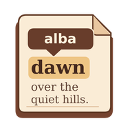

Глава IV · «Марта»EN / RU
The Secret Garden
Mary went to the window. There were gardens and paths and big trees, but everything looked dull and wintry.
Значение в отрывке
wintryпо-зимнему

FolioБесплатная читалка со словарём
Встретили незнакомое слово? Нажмите на него прямо в книге. Перевод появится рядом, а слово можно оставить на повторение после главы.
Без подписки Без регистрации В браузере
На странице
Нажмите на любое слово в отрывке, чтобы узнать, что оно значит здесь.
Открыть книгу в FolioMary went to the window. There were gardens and paths and big trees, but everything looked dull and wintry.
wintryпо-зимнему
Из каталога Folio
Три издания с разной сложностью. Выберите обложку, чтобы открыть книгу на английском.
Возможности
Можно читать классику из каталога, научные статьи и новости или собрать полку из своих файлов.
Да. Книги из каталога, импорт своих файлов, словари и повторение слов доступны без подписки и регистрации. Если вы сами подключите сторонний ИИ-сервис, у него могут быть свои тарифы.
В этом браузере на вашем устройстве. Автоматической синхронизации нет. Перед сменой браузера или устройства экспортируйте резервную копию в профиле. Страницы комиксов в неё не входят: сохраните исходные файлы.
EPUB без DRM, TXT в UTF-8 или UTF-16 с меткой кодировки, незащищённый PDF, изображения PNG, JPEG и WebP, а также комиксы в CBZ. В режиме импорта текста сканы распознаются в браузере. Комиксы можно читать постранично.
Folio ищет слово в доступных словарях. В профиле можно установить словарь для своей языковой пары. Для чтения с готовым переводом добавьте файл того же издания; для перевода абзацев с английского на русский или хинди можно отдельно скачать модель. Для испанского доступен словарь, но не локальный перевод абзацев.
Да. Откройте репозиторий Folio, чтобы посмотреть код или предложить изменение.